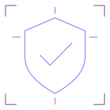

Security-focused software, systems and practical workflows. Explore six ways we can work together.
Independent capabilities
These are personal collaboration areas. Scope, deliverables and acceptance criteria are agreed for each engagement.
Co-Founder of NexusQart external site. Company services and personal project work are distinct.
01 / Capability explorer
Choose a starting point.
Read the approach, potential deliverables and related work for each area. These are possibilities to scope together, not guaranteed packages.
01 / Collaboration area
Secure Software Development

Build useful software around explicit permissions, understandable interfaces and meaningful verification.
Trust boundaries
Maintainability
Verification
Security-focused application development with scope and access decisions considered from the start.
Approach
Agree the problem and sensitive actions, map trust boundaries, then develop and review the smallest useful workflow. Define verification and remaining limitations alongside the implementation.
Potential deliverables
A scoped implementation plan and trust-boundary outline.
Application components and access-aware workflows, where agreed.
Verification notes, limitations and maintenance guidance.
Related work
SPECTRE ↗Documented case scope, evidence and authorization model
TRACEZERO ↗Documented initial case-access and evidence controls
Scope and acceptance criteria are agreed per collaboration. No security certification, audit guarantee or resistance-to-all-attacks claim is offered.
Translate domain rules into clear application layers, data responsibilities and operational boundaries.
Interfaces
Data modeling
Local-first systems
Application architecture and systems work focused on explicit responsibilities and maintainable operational workflows.
Approach
Start with domain and data boundaries, define interfaces and failure behavior, then work through persistence and operational needs. Keep setup, recovery and verification expectations visible.
Potential deliverables
Architecture and interface responsibilities.
Application or data-layer components within an agreed scope.
Setup, migration and operational notes where relevant.
Related work
SPECTRE ↗Documented Python/FastAPI and persistence layers
TRACEZERO ↗Documented local PHP/MySQL and separate database identities
Backend engineering is a collaboration area. This portfolio itself remains a static site and requires no application server or database.
Explore bounded AI assistance with clear inputs, review steps and a visible distinction between evidence and interpretation.
Integration scope
Human review
Evaluation
AI-assisted development and integration exploration grounded in the blueprint-reported skill areas, without claiming an independently verified AI deployment.
Approach
Clarify the use case and data that may be processed, define the assistant's permitted actions, then evaluate a bounded prototype with human review. Record uncertain outputs and integration limits.
Potential deliverables
A use-case and data-boundary assessment.
A scoped prototype or integration plan where appropriate.
Evaluation examples, review criteria and documented limitations.
Related work
SPECTRE ↗Evidence-grounded, read-only AI design intention; implementation unverified
SPECTRE's AI context is a documented design intention. No model/provider partnership, production AI deployment or predictive-accuracy result is claimed.
Connect readable interfaces with clear application behavior, while respecting access, usability and deployment constraints.
Accessible UI
Application flows
Progressive enhancement
Web application collaboration across interface and application responsibilities. Static-first delivery is appropriate when server behavior is unnecessary.
Approach
Map user tasks and information structure, build semantic and responsive interfaces, then connect only the application behavior the scope requires. Test important paths and document outstanding checks.
Potential deliverables
Responsive interface and page components.
Application workflows or a static delivery approach, as agreed.
Accessibility and functional review notes with actual results.
Related work
ShadowWatch ↗Documented PHP/MySQL and vanilla-JavaScript training application
TRACEZERO ↗Documented local web investigation workspace
Project references demonstrate documented scope, not independently audited release quality. ShadowWatch is a training simulator and its source limitations remain explicit.
Develop investigation and training tooling with deliberate scope, evidence handling and authorization boundaries.
OSINT
SOC training
Scoped investigation
Software-oriented cybersecurity collaboration drawing on OSINT investigation, SOC training and secure application design.
Approach
Define permitted use, targets and data first. Organize evidence and analyst decisions into understandable workflows; distinguish observed facts from interpretations and any planned capability.
Potential deliverables
A scoped investigation or training-tool design.
Evidence-aware workflow components within agreed boundaries.
Authorization, provenance and validation documentation.
Related work
SPECTRE ↗Local-first OSINT and separately authorized verification
ShadowWatch ↗Simulated SOC workflow; no live monitoring
No managed SOC, customer-infrastructure monitoring, unrestricted scanning or completed REVENANT execution capability is implied. Active work requires explicit authorization.
Make repetitive workflows clearer through explicit rules, reviewable actions and practical handoffs.
Workflow mapping
Repeatable tasks
Operational clarity
A collaboration area for translating a defined manual process into a bounded, maintainable software workflow.
Approach
Map the current steps and exceptions, identify a useful repeatable portion, then agree permissions, human review and failure handling. Prefer a small validated improvement over unverified automation claims.
Potential deliverables
A workflow map and automation opportunity outline.
A bounded script or workflow prototype, where appropriate.
Handoff instructions and verification of agreed paths.
These projects are technical workflow references, not evidence of commercial automation deployments or measured time/cost savings. No business outcome is guaranteed.
A useful first conversation starts with your goal, current workflow, constraints and the people who will use the result. Each Get in Touch link opens your email app with the relevant subject; nothing is submitted through this website.
This portfolio runs as static HTML, CSS and JavaScript. It needs no backend, database, account or form service.